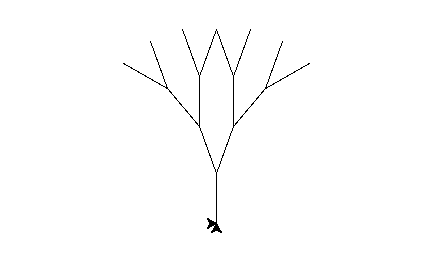
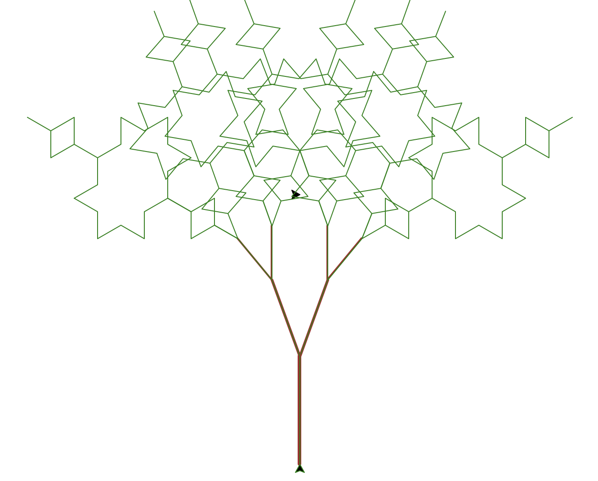

Koch Curve
Here's the standard version of a koch curve:
koch_standard(Oogway, 4, 20)
This is the modified koch curve. Each time the turtle draws a depth 1 koch curve, the turtle changes its pen color through generating a random rgb color code. As such, each line drawn is differently colored. Additionally, a new variable has been added to the parameters: vary. A number between 0 and vary will be generated, and that will be subtracted from the existing angle, effectively making it random how much the turtle will turn. If vary is zero, the turtle will simply draw a regular koch curve. Lastly, the function now requires a second turtle that will draw its own altered koch curve backwards.
Po = turtle.Turtle()
def koch_variant(t, t1, depth, length, vary):
if depth == 1:
t.fd(length)
t1.bk(length)
t.color( (random.randrange(0, 255),random.randrange(0, 255),random.randrange(0, 255) ))
t1.color( (random.randrange(0, 255),random.randrange(0, 255),random.randrange(0, 255) ))
else:
koch_variant(t, t1, depth - 1, length, vary)
if vary == 0:
t.lt(60)
t1.rt(60)
else:
t.lt(60 - random.randrange(0, vary))
t1.rt(60 - random.randrange(0, vary))
koch_variant(t, t1, depth - 1, length, vary)
if vary == 0:
t.rt(120)
t.lt(120)
else:
t.rt(2*(60 - random.randrange(0, vary)))
t1.lt(2*(60 - random.randrange(0, vary)))
koch_variant(t, t1, depth - 1, length , vary)
if vary == 0:
t.lt(60)
t1.rt(60)
else:
t.lt(60 - random.randrange(0, vary))
t1.rt(60 - random.randrange(0, vary))
koch_variant(t, t1, depth - 1, length , vary)
koch_variant(Oogway, Po, 4, 20, 10)

Sierpinski Triangle
The standard sierpinski triangle:
sierpinski_standard(Oogway, 5, 200)
Here's the code for a modified version of the sierpinski triangle. Each triangle is in its regular position, however they have been flipped upside down. A variable, width, has also been added. The turtle changes its width each time it draws a depth 1 triangle, the width being randomly chosen from a number between 0 and the value put for the width variable.
def sierpinski_variant(t, depth, length, width):
if depth == 1:
t.width(random.randrange(0, width))
t.rt(60)
t.fd(length)
t.lt(120)
t.fd(length)
t.lt(120)
t.fd(length)
t.lt(180)
else:
sierpinski_variant(t, depth - 1, length/2, width)
t.fd(length/2)
sierpinski_variant(t, depth - 1, length/2, width)
t.rt(60)
t.pu()
t.bk(length/2)
t.pd()
t.lt(60)
sierpinski_variant(t, depth - 1, length/2, width)
t.rt(60)
t.pu()
t.fd(length/2)
t.pd()
t.lt(60)
t.bk(length/2)
sierpinski_variant(Oogway, 5, 200, 5)
Fractal Tree
This is the standard version of a fractal tree.
tree_standard(Oogway, 4, 50, 20)

The following is the code and the image of the modified code of the fractal tree. The depth 1 fractal tree has been changed to a koch curve, and a new variable has been added to the function that determines the koch curve's depth. The pencolor of the depth 1 fractal tree is green, and the pencolor of the higher depths starts as brown to help depict a tree. Additionally, the turtle's width is set to the depth of the function, meaning the width will decrease as the function goes through the lower depths. The code of a standard koch curve is also provided, as the koch curve is crucial to the modified fractal tree.
def koch_standard(t, depth, length):
if depth == 1:
t.fd(length)
else:
koch_standard(t, depth - 1, length)
t.lt(60)
koch_standard(t, depth - 1, length)
t.rt(120)
koch_standard(t, depth - 1, length)
t.lt(60)
koch_standard(t, depth - 1, length)
def tree_variant(t, depth, length, angle, mod):
if depth == 1:
t.pencolor('green')
koch_standard(t, depth * mod, length)
t.rt(180)
koch_standard(t, depth * mod, length)
t.rt(180)
else:
t.width(depth)
t.pencolor('brown')
t.fd(length * depth)
t.rt(angle)
t.width(1)
tree_variant(t, depth - 1, length, angle, mod)
t.lt(angle * 2)
tree_variant(t, depth - 1, length, angle, mod)
t.rt(angle)
t.bk(length * depth)
Oogway.pu()
Oogway.sety(-300)
Oogway.pd()
tree_variant(Oogway, 4, 30, 20, 3)
